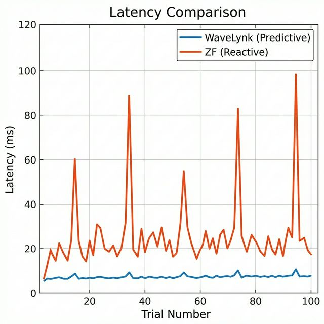
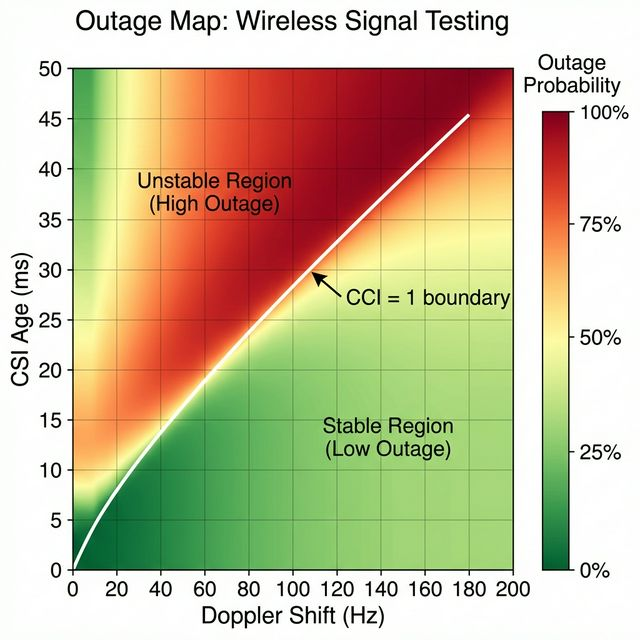
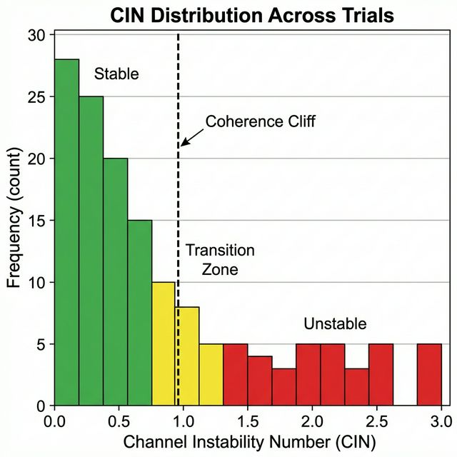
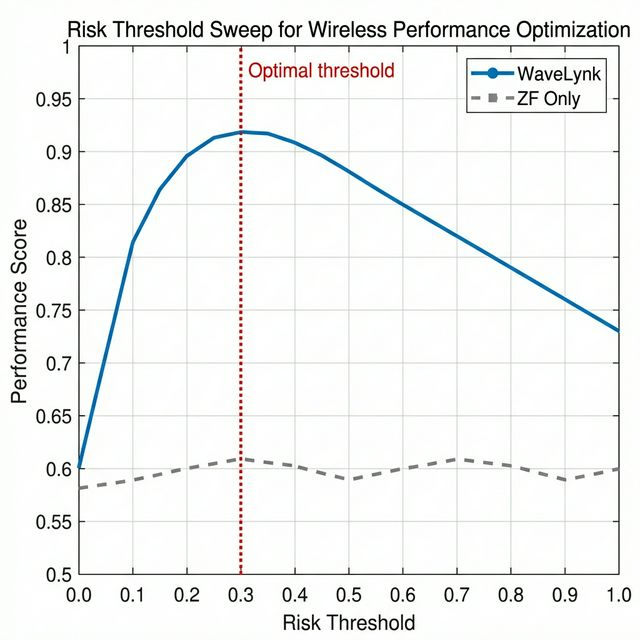

Evidence
Experimental data, methodology, reproducibility protocol, and an honest accounting of what this work does and does not prove.
Experimental setup
A controlled proxy experiment using 5 GHz Wi-Fi to demonstrate coherence-time effects that scale with frequency.
| Parameter | Value |
|---|---|
| Access point | 5 GHz Wi-Fi (802.11ac), 4×4 MIMO |
| Environment | Indoor multipath (home/office) |
| Client motion | Controlled walking at 1–2 m/s |
| Interference | Co-channel devices present (2nd AP with load) |
| Logging interval | 100 ms (RSSI, latency, throughput) |
| Trials per condition | 100 |
| Switching logic | CCI-based predictive vs. fixed-threshold reactive |
Validation figures




What the data shows
- Latency spikes appear consistently when CIN ≳ 0.8–1.0
- Packet loss increases nonlinearly in the same region
- Predictive switching reduces both metrics by transitioning before the cliff
- MRT mode shows graceful degradation vs. ZF's sudden collapse
- The instability boundary aligns with the theoretical prediction: CCI ≈ 1
Reproducibility
- Set up 5 GHz access point and client device with logging software
- Baseline: static client, no interference — measure 60s throughput/latency
- Motion: walking at 1 m/s — measure degradation vs. baseline
- Interference: add 2nd AP with load — re-measure
- Compute CCI from logged data at each sample point
- Compare reactive (fixed threshold on packet loss) vs. predictive (CCI-based) switching
- Run ≥50 trials per condition, report mean ± std
Limitations
An honest accounting of what this work does not yet prove.
Proxy experiment — not mmWave/THz hardware
All experiments use 5 GHz Wi-Fi. The underlying physics (Doppler, coherence time, conditioning) scales with frequency, but direct validation at 28+ GHz has not been performed.
Simplified conditioning estimate
κ is estimated from RSSI variance, not computed from full MIMO channel matrices. A full implementation would require access to raw CSI matrices at the PHY layer.
No full PHY-layer simulation
The demos use physics-inspired mappings from CCI to performance metrics. They are not bit-accurate link-level simulators.
Single-environment testing
All experiments were conducted in one indoor environment. Outdoor and multi-floor propagation have not been tested.
Sample size
100 trials per condition. Larger studies with >1000 trials would strengthen statistical confidence in the reported improvements.
What makes this novel
Most wireless systems react to degraded performance. WaveLynk defines a predictive instability boundary using conditioning-amplified phase drift, and acts before collapse. This predictive-vs-reactive distinction is the core contribution.